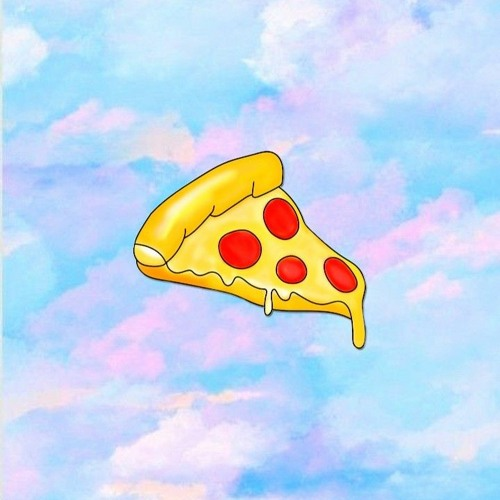

I'm positively convinced everyone loves pizza. Who doesn't like bread, cheese, and tomatoes?
Learn how to make pizza at your convience here.
-
1 14.5-ounce can whole peeled tomatoes, undrained
-
1/2 teaspoon dried oregano
-
kosher salt
-
1 1-pound package refrigerated pizza dough
-
8 ounces fresh mozzarella, sliced, or 4 shredded provolone
-
8 fresh basil leaves, torn
Pizza Recipe:
- Heat oven to 450*F. In a small saucepace, over medium heat,
combine the tomatoes and their juices, the oregano
and 1/4 teaspoon salt. Bring to a boil.
-
Reduce heat and simmer, crushing the tomatoes
with a wooden spoon until the sauce thickens, 10 to 15 minutes.
-
Shape the dough into one 12- to 14-inch round and place on a
baking sheet. Cover with the sauce and top with the cheese.
-
Bake until the crust is golden brown and crisp, about 20 minutes.
-
Transfer to a cutting board and sprinkle with the basil.
Slice and divide among individual plates.